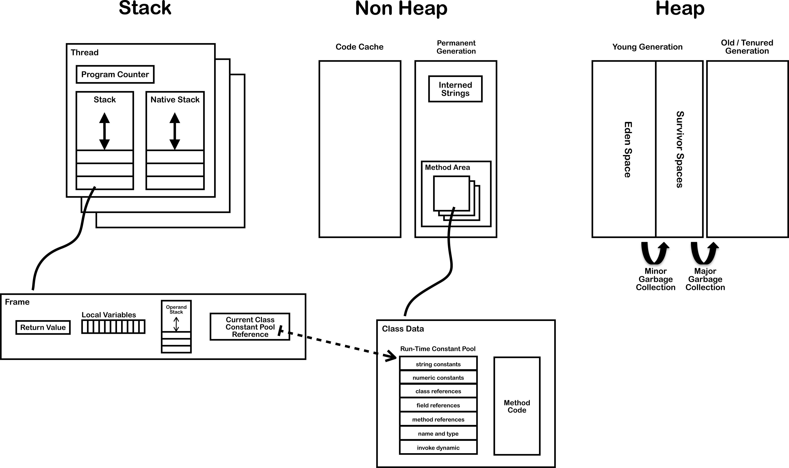
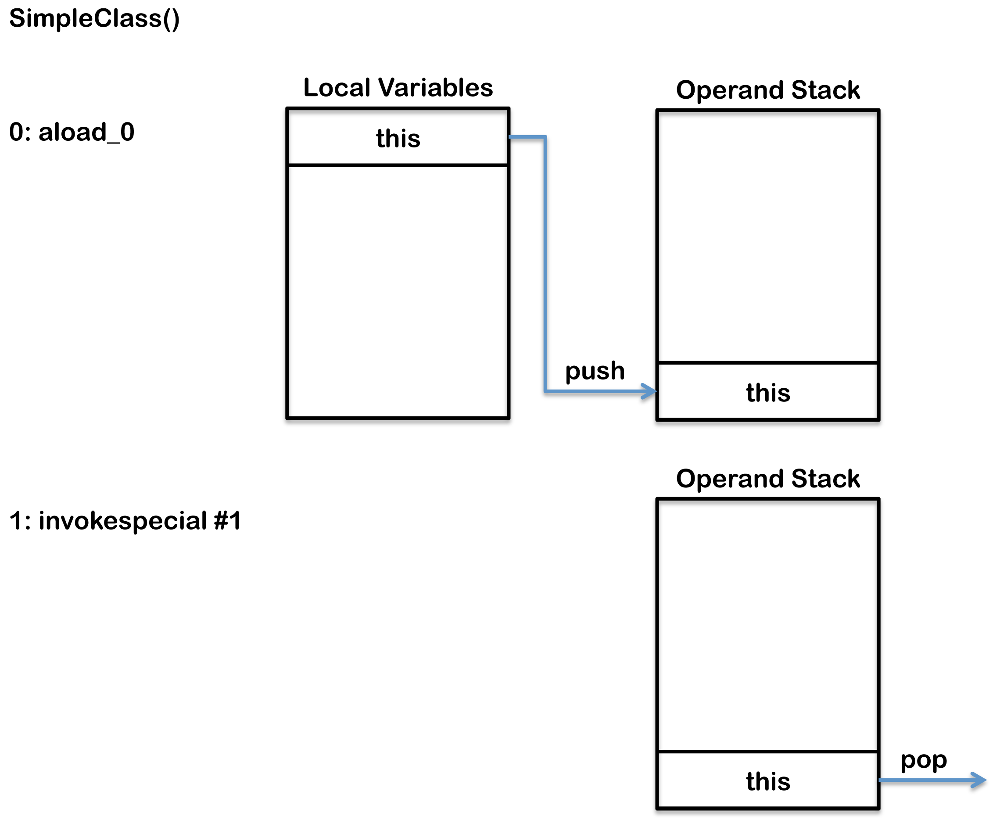
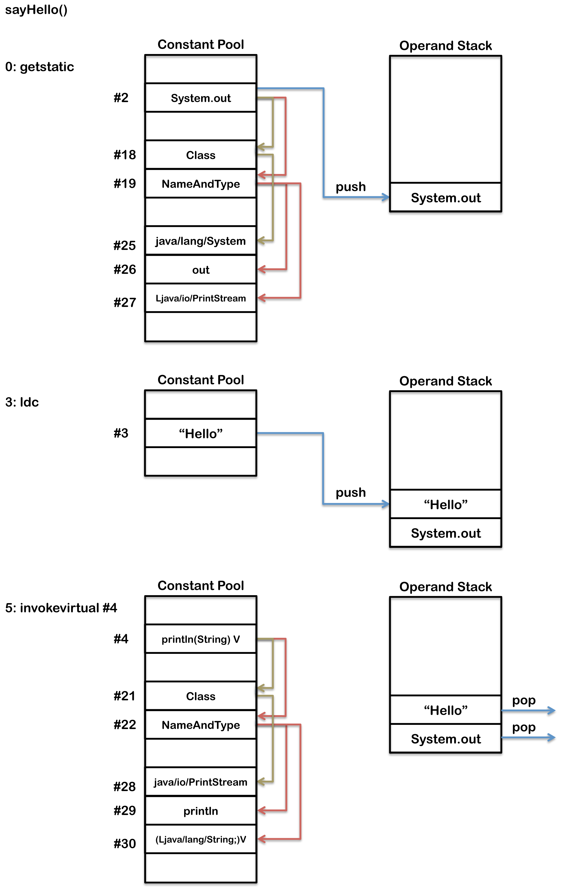

基于栈的虚拟机
JVM是一种基于栈的虚拟机，绝大部分字节码操作都涉及到操作数栈中操作数的入栈和出栈。例如，在执行求和操作时，会将两个操作数入栈，将两个数做加法后再将结果入栈，使用结果的时候再将操作结果出栈。除了栈之外，字节码的格式还规定了有多达65536个寄存器可以使用，也称之为 局部变量。
在字节码格式中，操作指令都被编码在一个字节中，也就是说，JVM最多支持256种 操作码（opcode）,每种操作都有唯一值和类似于汇编指令的 助记符
字节码格式概览
下面的代码是一个执行加法的函数及其编译后的字节码格式：
public int add(int a, int b) {
return a + b;
}
public int add(int, int);
Code:
0: iload_1 // stack: a
1: iload_2 // stack: a, b
2: iadd // stack: (a+b)
3: ireturn // stack:
}
函数add有两个输入参数a和b，分别被放入局部变量1和局部变量2中（根据JVM规范，实例方法局部变量0中存放是this）。前两个操作，即iload_1和iload_2，用于将局部变量1和局部变量2中的值放入到操作数栈中。第三个操作iadd从操作数栈中弹出两个数，对其求和，并将结果入栈。第四个操作ireturn弹出之前计算出的和，以该值作为返回值，方法结束。上面例子中的每一步字节码操作旁边都有关于操作数栈操作的注释，读者可自行揣摩。
字节码结构详解
key internal components of a typical JVM that conforms to The Java Virtual Machine Specification Java SE 7 Edition.

The components shown on this diagram are each explained below in two sections. First section covers the components that are created for each thread and the second section covers the components that are created independently of threads.
- Threads
- JVM System Threads
- Per Thread
- program Counter (PC)
- Stack
- Native Stack
- Stack Restrictions
- Frame
- Local Variables Array
- Operand Stack
- Dynamic Linking
- Shared Between Threads
- Heap
- Memory Management
- Non-Heap Memory
- Just In Time (JIT) Compilation
- Method Area
- Class File Structure
- Classloader
- Faster Class Loading
- Where Is The Method Area
- Classloader Reference
- Run Time Constant Pool
- Exception Table
- Symbol Table
- Interned Strings (String Table)
Threads
Stack
Each thread has its own stack that holds a frame for each method executing on that thread. The stack is a Last In First Out (LIFO) data structure, so the currently executing method is at the top of the stack. A new frame is created and added (pushed) to the top of stack for every method invocation. The frame is removed (popped) when the method returns normally or if an uncaught exception is thrown during the method invocation. The stack is not directly manipulated, except to push and pop frame objects, and therefore the frame objects may be allocated in the Heap and the memory does not need to be contiguous.
Frame
A new frame is created and added (pushed) to the top of stack for every method invocation. The frame is removed (popped) when the method returns normally or if an uncaught exception is thrown during the method invocation. For more detail on exception handling see the section on Exception Tables below.Each frame contains:
- Local variable array
- Return value
- Operand stack
- Reference to runtime constant pool for class of the current method
Operand Stack
The operand stack is used during the execution of byte code instructions in a similar way that general-purpose registers are used in a native CPU. Most JVM byte code spends its time manipulating the operand stack by pushing, popping, duplicating, swapping, or executing operations that produce or consume values. Therefore, instructions that move values between the array of local variables and the operand stack are very frequent in byte code. For example, a simple variable initialization results in two byte codes that interact with the operand stack.
int i;
Gets compiled to the following byte code:
0: iconst_0 // Push 0 to top of the operand stack
1: istore_1 // Pop value from top of operand stack and store as local variable 1
下面的代码是判断一个数是否是偶数的函数，及其编译为字节码后的样子：
public boolean even(int number) {
return (number & 1) == 0;
}
public boolean even(int);
Code:
0: iload_1 // 0x1b number
1: iconst_1 // 0x04 number, 1
2: iand // 0x7e (number & 1)
3: ifne 10 // 0x9a 0x00 0x07
6: iconst_1 // 0x03 1
7: goto 11 // 0xa7 0x00 0x04
10: iconst_0 // 0x03 0
11: ireturn // 0xac
}
在上面的代码中，首先将传入的参数number和常数1压入到操作数栈中，然后将它们都弹出求和，即执行iand指令，并将结果压入操作数栈。指令ifne进行条件判断，从操作数栈中弹出一个操作数做比较判断，如果不是0的话，就跳转到其他分支运行。指令iconst_0将常数0压入到操作数栈中，其操作码为0x03，其后无操作数。类似的，指令iconst_1会将常量1压入操作数栈中。返回值为布尔类型时是使用常量整数来表示的。
比较和跳转指令，例如ifne（如果不相等则跳转，字节码是0x9a），通常需要使用两个字节的操作数（以满足16位跳转偏移的要求）。举个例子，如果有一个操作是经过条件跳转判断后需要将指令指针向前移动10000个字节的话，那么这个操作的编码应该是0x9a 0x27 0x10（注意，0x2710是10000的16禁止表示，字节码中数字的存储是大端序的）。
字节码中还包含其他一些复杂结构，例如分支跳转，是通过在tableswitch指令后附加包含了所有跳转偏移的分支跳转表实现的。
Shared Between Threads
Non-Heap Memory
Objects that are logically considered as part of the JVM mechanics are not created on the Heap.The non-heap memory includes:
- Permanent Generation that contains
- the method area
- interned strings
- Code Cache used for compilation and storage of methods that have been compiled to native code by the JIT compiler
- Just In Time (JIT) Compilation
Java byte code is interpreted however this is not as fast as directly executing native code on the JVM’s host CPU. To improve performance the Oracle Hotspot VM looks for “hot” areas of byte code that are executed regularly and compiles these to native code. The native code is then stored in the code cache in non-heap memory. In this way the Hotspot VM tries to choose the most appropriate way to trade-off the extra time it takes to compile code verses the extra time it take to execute interpreted code.
程序，包含数据和代码量部分，而数据则作为操作数使用。对于字节码程序来说，如果操作数非常小而又很常用，则这些操作数是直接内嵌在字节码指令中的，（例如iconst_0）。
较大块的数据，例如常量字符串或比较大的数字，是存储在class文件开始部分的常量池中的。要使用数据作为操作数时，使用的是常量池中数据的索引位置，而不是实际数据本身。如果在编译方法时每次都要重新编码字符串的话，那字节码就谈不上压缩存储了。
此外，Java程序中，方法、域和类的元数据也是class文件的组成部分，存储在常量池中。
Method Area
The method area stores per-class information such as:
-
Classloader Reference
-
Run Time Constant Pool
- Numeric constants
- Field references
- Method References
- Attributes
-
Field data
- Per field
- Name
- Type
- Modifiers
- Attributes
- Per field
-
Method data
- Per method
- Name
- Return Type
- Parameter Types (in order)
- Modifiers
- Attributes
- Per method
-
Method code
- Per method
- Bytecodes
- Operand stack size
- Local variable size
- Local variable table
- Exception table
- Per exception handler
- Start point
- End point
- PC offset for handler code
- Constant pool index for exception class being caught
- Per exception handler
- Per method
All threads share the same method area, so access to the method area data and the process of dynamic linking must be thread safe. If two threads attempt to access a field or method on a class that has not yet been loaded it must only be loaded once and both threads must not continue execution until it has been loaded.
Class File Structure
可以使用JDK附带的命令行工具javap对字节码进行反汇编
A compiled class file consists of the following structure:
ClassFile {
u4 magic;
u2 minor_version;
u2 major_version;
u2 constant_pool_count;
cp_info contant_pool[constant_pool_count – 1];
u2 access_flags;
u2 this_class;
u2 super_class;
u2 interfaces_count;
u2 interfaces[interfaces_count];
u2 fields_count;
field_info fields[fields_count];
u2 methods_count;
method_info methods[methods_count];
u2 attributes_count;
attribute_info attributes[attributes_count];
}
If you compile the following simple class:
package org.jvminternals;
public class SimpleClass {
public void sayHello() {
System.out.println("Hello");
}
}
Then you get the following output if you run:
javap -v -p -s -sysinfo -constants classes/org/jvminternals/SimpleClass.class
public class org.jvminternals.SimpleClass
SourceFile: "SimpleClass.java"
minor version: 0
major version: 51
flags: ACC_PUBLIC, ACC_SUPER
Constant pool:
#1 = Methodref #6.#17 // java/lang/Object."<init>":()V
#2 = Fieldref #18.#19 // java/lang/System.out:Ljava/io/PrintStream;
#3 = String #20 // "Hello"
#4 = Methodref #21.#22 // java/io/PrintStream.println:(Ljava/lang/String;)V
#5 = Class #23 // org/jvminternals/SimpleClass
#6 = Class #24 // java/lang/Object
#7 = Utf8 <init>
#8 = Utf8 ()V
#9 = Utf8 Code
#10 = Utf8 LineNumberTable
#11 = Utf8 LocalVariableTable
#12 = Utf8 this
#13 = Utf8 Lorg/jvminternals/SimpleClass;
#14 = Utf8 sayHello
#15 = Utf8 SourceFile
#16 = Utf8 SimpleClass.java
#17 = NameAndType #7:#8 // "<init>":()V
#18 = Class #25 // java/lang/System
#19 = NameAndType #26:#27 // out:Ljava/io/PrintStream;
#20 = Utf8 Hello
#21 = Class #28 // java/io/PrintStream
#22 = NameAndType #29:#30 // println:(Ljava/lang/String;)V
#23 = Utf8 org/jvminternals/SimpleClass
#24 = Utf8 java/lang/Object
#25 = Utf8 java/lang/System
#26 = Utf8 out
#27 = Utf8 Ljava/io/PrintStream;
#28 = Utf8 java/io/PrintStream
#29 = Utf8 println
#30 = Utf8 (Ljava/lang/String;)V
{
public org.jvminternals.SimpleClass();
Signature: ()V
flags: ACC_PUBLIC
Code:
stack=1, locals=1, args_size=1
0: aload_0
1: invokespecial #1 // Method java/lang/Object."<init>":()V
4: return
LineNumberTable:
line 3: 0
LocalVariableTable:
Start Length Slot Name Signature
0 5 0 this Lorg/jvminternals/SimpleClass;
public void sayHello();
Signature: ()V
flags: ACC_PUBLIC
Code:
stack=2, locals=1, args_size=1
0: getstatic #2 // Field java/lang/System.out:Ljava/io/PrintStream;
3: ldc #3 // String "Hello"
5: invokevirtual #4 // Method java/io/PrintStream.println:(Ljava/lang/String;)V
8: return
LineNumberTable:
line 6: 0
line 7: 8
LocalVariableTable:
Start Length Slot Name Signature
0 9 0 this Lorg/jvminternals/SimpleClass;
}
This class file shows three main sections the constant pool, the constructor and the sayHello method.
-
Constant Pool – this provides the same information that a symbol table typically provides and is described in more detail below.
-
Methods – each containing four areas:
- signature and access flags
- byte code
- LineNumberTable – provides information to a debugger to indicate which line corresponds to which byte code instruction, for example line 6 in Java code corresponds to byte code 0 in the sayHello method and line 7 corresponds to byte code 8
- LocalVariableTable – this lists all local variables provided in the frame, in both examples the only local variable is this.

